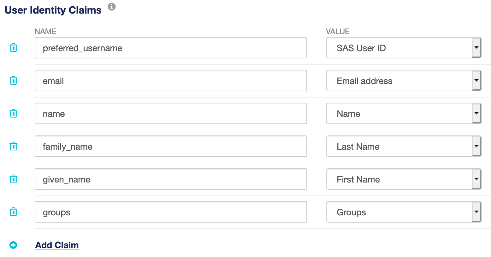

IDPrime Virtual Evaluation Setup Guide with SafeNet DPoD¶
Overview¶
This document should help you to circumvent the pitfalls during your first evaluation installation of IDPrime Virtual. The main challenge with this solution is the fact that it combines so many modules in one solution:
- SafeNet Luna Network HSM or Data Protection on Demand (DPoD)
currently DPoD is supported for test installations only
SafeNet Trusted Access (STA) - MFA via OpenID Connect (OIDC)
- Linux Server
SafeNet IDPrime Virtual Server (IDPV Server) - provided as Docker container
MySQL or MariaDB - IDPV Server configuration
- Windows Client with
SafeNet Authentication Client (SAC) or SafeNet Minidriver
SafeNet IDPrime Virtual Client (IDPV Client)
SafeNet IDPrime Virtual Credential Provider
Note
This document should not replace the “IDPrime Virtual Solution Guide” that is part of the IDPV software package. However, it tries to provide a brief guidance concerning the steps required for a standard evaluation setup and might help to avoid general pitfalls.
Versions¶
- CentOS 7.9 (or similar Linux distro)
Docker 20.10.1
MariaDB 10.5.8 (or MySQL)
- IDPrime Virtual Server 2.1 (KB0023000)
-There is a Full version as well as a Trial version (with 50 licenses)
IDPrime Virtual Client 2.0.1 (also in KB0023000)
SAC 10.8 R2 for Windows (KB0022544)
Prerequisites¶
You have to prepare some components before you are able to install the IDPrime Virtual Server.
Docker¶
IDPrime Virtual Server is provided as a Docker image. To install and run the latest release of the Docker software you can follow the documentation on the Docker web site. The cleanest way would be to add the official repo using the “yum-config-manager” which is part of the “yum-utils” and might have to be installed first:
yum install -y yum-utils
yum-config-manager --add-repo https://download.docker.com/linux/centos/
docker-ce.repo
yum install docker-ce docker-ce-cli containerd.io
After the installation of Docker you have to start the service:
systemctl start docker
docker info
Use the following command to get further information on the Docker “bridge” network which will help you identify the container IPs later on:
docker network inspect bridge
MariaDB¶
IDPrime Virtual Server stores all its configuration information in a database. MariaDB is a fork of the MySQL database under full GPL-2 license. In this scenario it is installed on the same CentOS server as the Docker environment. MySQL can also be used. Please follow the installation instructions of your selected Database. We will use MariaDB.
Database installation¶
To install the latest version on a CentOS 7 server you can follow the description on the MariaDB website as the CentOS repository only contains MariaDB 5.5. You can use the following commands to install the latest 10.x version:
wget https://downloads.mariadb.com/MariaDB/mariadb_repo_setup
chmod +x mariadb_repo_setup
./mariadb_repo_setup
yum install MariaDB-server
Create Database for IDPV¶
Create a database for IDPV named IDPrimeVirtualServer:
mysql -u root -p
CREATE DATABASE IDPrimeVirtualServer;
Create IDPV User¶
You have to manually create the user account for IDPrime Virtual Server. The following commands will create a user with the required access rights and network restrictions (given the default Docker “bridge” network is 172.17.0.0/16):
GRANT SELECT, INSERT, UPDATE, DELETE, CREATE, REFERENCES, INDEX, ALTER ON IDPrimeVirtualServer.* TO 'idpvuser'@'172.17.%' IDENTIFIED BY '<db-password>';
Installation Parameters (MariaDB)¶
Parameter |
Value |
Notes |
|---|---|---|
Database Server IP |
172.17.0.1 |
Standard Docker Host Network |
Database Server Port Number |
3306 |
Default port for MariaDB |
Database User |
idpvuser |
Can be changed as required |
Database Password |
<db-password> |
Set during database creation |
SafeNet Trusted Access¶
IDPrime Virtual relies on multi-factor authentication via Open ID Connect (OIDC). For this you need to prepare a valid STA account to authenticate against. You also have to collect some parameters required later during the configuration process.
Create new OIDC Application¶
In the STA Console create a new application by following these steps:

- Go to the Applications tab by clicking
- Click and serach for Generic Template
Add the template and rename it to IDPrime Virtual
Select OIDC as Integration Protocol
Leave the Access Type as Confidential
- Under STA Setup set the following parameters:
ALLOWED FLOW TYPE: “Authorization Code Flow”
VALID REDIRECT URL: <http://my.idpv.com> (any HTTP URL)
Under User Identity Claims use Add claim to create a new claim called “groups” and set the mapping to Groups:

{kind=link}
{kind=link}
Installation Parameters (STA)¶
Part 1: From the Generic Template Setup section of the STA application settings get the following information which is required later during the further configuration:
Parameter |
Example |
|---|---|
Client ID |
18a6bb02-d311-4f32-a6d0-c65391acc13d |
Client Secret |
e340dae4-bcab-4fa5-b90a-525b188c79f9 |
Valid Redirect URL |
|
Authorization End Point URL |
https://idp.eu.safenetid.com/auth/realms/D92SU4EJGP-STA/protocol/openid-connect/auth |
Issuer URL |
Part 2: Copy above “Authorization End Point URL”, paste it into your web browser, replace “/auth” with “/certs” and press enter. If you are using Firefox, the information will displayed in a readable format, other browsers will display a web page in JSON format.
Note
The JSON output is hardly readable so you can copy and paste the web page content into a JSON formatter, e.g. https://jsonformatter.org/. To keep the data local you could also use a plugin available for Notepad++ (e.g. JSTool).
From this page you need the following STA public key parameters that will be required later:
Parameter |
Example |
|---|---|
“n” (Key Modulus) |
y1nA5wvYoTlIPyPxjO62soODuJms96CrNp9UqJIcr0ebY6seW1lGY1zcZ3qdHUtoCFWS0gD7RBdbWjRkHzQE H8s5dkPrTZrjmeQ6yhhKZ3pxwIhkosZBZvsImgExzc0Z1u0ziJwbMEpIH2jOiOh8-zBtb0xSmqpQ_g0P3uct fXHptEIUEhri4tt6sPg6-LOfVXIEyNdWozjprXSWQ3iWjwO2dP5JSblucrta-ZnPLomQszalrb-Emzxcs8RK dIzq5jh9ZCnejoe1fET8bwhPZx60BJiBs8Obdjs3OX4raGg04z_2B61T_vMZKIVyYVuO3m-wWt58 |
“e” (Key Exponent) |
AQAB |
“kid” (Key ID) |
ohB2F9_d-4xAaQeKtBxmayRuC4PtkDthWliCrLrKJ-Q |
DPoD¶
You can either use Data Protection on Demand (DPoD) or a SafeNet Luna Network HSM partition as the “Root of Trust” for the IDPrime Virtual Server. In this guide, we’ll use DPoD
Note
Currently DPoD is only supported in test and evaluation scenarios due to the fact that it doesn’t support Key Export mode. Therefore the size of the partition limits the number of virtual smart card keys that can be stored. However, there will be a new DPoD service tile with Key Export functionality in Q1/2021.
DPoD Configuration¶
Create a new “HSM on Demand” service with FIPS deactivated and download the client package:

Note
You have to make sure that you select the “Remove FIPS restrictions” option as FIPS mode is currently not supported with DPoD due to a known limitation in the service.
Create a dpod folder in the /tmp directory on your Linux host
mkdir /tmp/dpod
Download and unpack the DPoD client in your “dpod” folder and deploy a copy of these files in a new folder “/var/thales/hsm” which will later be used by your Docker container:
unzip setup-dpod.zip
tar xf cvclient-min.tar
chmod a+x setenv
mkdir –p /var/thales/hsm
cp –r * /var/thales/hsm/
Note
Keeping a copy of the DPoD files outside the “/var/thales/hsm” folder allows running the HSM tools independently from the Docker instance (due to different configuration paths in the “Chrystoki.conf” instances).
To initialize the DPoD instance you have to perform the following steps:
Set the environment variables from within the “dpod” folder (NOT in the “/var/thales/hsm” folder):
source ./setenvStart “lunacm” and initialize the partition as well as the Partition Security Officer (“po”) and Crypto Officer (“co”) roles:
/bin/64/lunacmpartition init -label IDPrimeVirtualFollow the on-screen instruction
role login -n porole init -n corole login -n corole changepw -n corole logout
The full documentation of DPoD can be found on the Thales Documentation Hub.
Installation Parameters (DPoD)¶
For the installation of IDPrime Virtual Server you need this information from your DPoD environment:
Parameter |
Example |
Notes |
|---|---|---|
Token Serial Number |
1334054146809 |
Listed after “lunacm” start |
Crypto Officer Password |
<CO-Password> |
Password set in the last step of the partition init |
IDPrime Virtual Server¶
The following sections describe the installation and configuration of the IDPrime Virtual Server.
Overview¶
There are two different versions of IDPrime Virtual Server available:
Trial Version – allows test and evaluation installations without additional licenses. However, this version is limited to 50 virtual smart cards
Full Version – requires a dedicated license
The current version is available from the Thales Support Portal (requires valid service account).
Installation¶
Create an idpv folder in /tmp on your Linux host
mkdir /tmp/idpv
Download and unzip IDPrime Virtual Server package in idpv folder and load the Docker image using this command:
unzip Thales_IDPrimeVirtualServer-v2.1.0.132.zip
docker load -i virtual_idprime_server.tar.gz
You can verify that the image was imported correctly:
docker images
Configuration¶
There are several configuration files that have to be provided in your “/var/thales/config” folder on your Docker host. The configuration templates can be found in your “/tmp/idpv/config” folder.
appsetting.yml¶
The main configuration parameters for IDPrime Virtual Server are defined in this file. There are two different templates for HTTP and HTTPS:
# This is a yml file. Values are in Key: Value format. Values are not required to be put in qoutes single' or double "
DatabaseConfig:
DatabaseProvider: MariaDB # (Mandatory) Database provider name. List of supported databases are 'MySQL, MariaDB and MSSQL'
ConnectionString: server=172.17.0.1;port=3306; User=idpvuser; Password=<db-password>; Database=IDPrimeVirtualServer; # (Mandatory) Database connection string
HSMConfig:
HSMProvider: Dpod # (Mandatory) HSM provider name. Supported providers are 'Luna, Dpod ,KeySecure' . Note- Dpod and KeySecure do not support offline virtual token.
TokenSerial: <token-serial> # (Mandatory) HSM partition serial number. #Leave it as blank in case of Key Secure
TokenPin: <co-password> # (Mandatory) HSM crypto officer (co) pin. OR #In case of KeySecure the value must be in format user:password
WebServerConfig:
ServerPublicUrl: http://<ip-or-hostname> # (Mandatory) It is mandatory to provide IDPV server url (public/intranet) which is being accessible from client machines.
TlsCertificateThumbprint: # (Optional) Thumbprint is not required in case of HTTP url. However it is recommended to host IDPV server on Https url and to provide thumbprint value of Server TLS certificate.
Kestrel: # It is recommended to configure Https settings.
EndPoints:
Http:
Url: http://*:5000
idp-configuration.json¶
The IDP connection parameters collected in the “STA” section of this document are defined in this configuration file:
{
"IdpPublicKeyModulus":"y1nA5wvYoTlIPyPxjO62soODuJms96CrNp9UqJIcr0ebY6seW1lGY1zcZ3qdHUtoCFWS0gD7RBdbWjRkHzQEH8s5dkPrTZrjmeQ6yhhKZ3pxwIhkosZBZvsImgExzc0Z1u0ziJwbMEpIH2jOiOh8-zBtb0xSmqpQ_g0P3uctfXHptEIUE hri4tt6sPg6-LOfVXIEyNdWozjprXSWQ3iW6jwO2dP5JSblucrta-ZnPLomQszalrb-Emzxcs8RKdIzq5jh9ZCnejoe1fET8bgH aTwhPZxMD6Oi0BJiBs8Obdjs3OX4raGg04z_2B61T_vMZKIVyYVuO3m-wWt58",
"IdpPublicKeyExponent":"AQAB",
"IdpKeyId":"ohB2F9_d-4xAaQeKtBxmayRuC4PtkDthWliCrLrKJ-Q",
"IdpClientId":"18a6bb02-d311-4f32-a6d0-c65391acc13d",
"IdpIssuerUrl":"https://idp.eu.safenetid.com/auth/realms/D92SU4EJGP-STA",
"IdpRedirectUrl":"http://my.idpv.com",
"JwtExpiration":"0000001e",
"JwtGroupClaim":"groups",
"JwtUserClaim":"preferred_username",
"JwtAdminWhiteList":"",
"IDPrimeVirtualAdmin":"IDPV_Admins",
"IDPrimeVirtualUser":"IDPV_Users",
"OfflineTokenEnabledGroup":"IDPV_OfflineEnabled"
}
policy-configuration.json¶
This file defines some policy settings for IDPrime Virtual:
{
"UserPinPolicy": {
"MaxRetries": 5,
"IsMustChange": false
},
"AdminPinPolicy": {
"MaxRetries": 5,
"IsMustChange": false
},
"OfflineTokenPolicy": {
"ValidityDurationInHours": 120,
"PrivateKeyExportLevel": "All"
}
}
log4net.config¶
This configuration file allows setting the log levels for different modules to “ERROR”, “WARN”, “INFO” or “DEBUG”.
Running the Server¶
To run the Docker instance you have to execute the following command:
docker run -d --name idpv -it -v /var/thales/config:/publish/Config/ -v /var/thales/hsm:/usr/local/hsm/ -p 80:5000 -p 443:5001 --restart unless-stopped idprimevirtual_server:2.1.0.132
The following “docker run” command switches might be helpful to understand:
- -d This will “detach” the container from the bash console to run it in the backgro
Use the following command to check the console output of a detached container
docker logs idpvOtherwise, the run-command will remain open to display messages on the console which might be helpful when running it the first time to immediately see if the server starts without errors
–restart unless-stopped Will restart the Docker container on server reboot, unless the container is in the stopped state
In case changes have to be made to the configuration, the Docker container will have to be stopped, removed and run again
To stop the container:
docker stop idpv
To remove the container:
docker rm idpv
Make the required changes to the configuration and execute the Docker run command to start IDPV Server
docker run -d --name idpv -it -v /var/thales/config:/publish/Config/ -v /var/thales/hsm:/usr/local/hsm/ -p 80:5000 -p 443:5001 --restart unless-stopped idprimevirtual_server:2.1.0.132
See Docker web site for the full documentation of “docker run”.
Tenant Creation¶
After the initial configuration of the IDPrime Virtual Server you have to create your first tenant on the server instance. IDPV Server supports multiple tenants. Therefore you have to create separate IDP and policy configuration files for each tenant.
To start the “SetupTenant” script you have to open a “bash” shell within the container:
docker exec -it idpv bash
setuptenant/Thales.IDPrimeVirtual.SetupTenant create -i /publish/Config/idp-configuration.json -p /publish/Config/policy-configuration.json -a "sta -client-secret>" -k false
After successful execution of the script it will display the tenant information generated from the configuration files. You will find this information also in a file with the name “<TenantId>.txt” in the folder “/publish/Tenant/”.
You can also call the script with the “list” parameter to get all existing tenants:
setuptenant/Thales.IDPrimeVirtual.SetupTenant list
Installation Parameters (IDPV)¶
These parameters will be required for the following installation of the IDPrime Virtual Client:
Parameter |
Example |
Notes |
|
|---|---|---|---|
TenantID |
e99e9003-bd9c-45ef-9097-88b7a417c7d4 |
Random unique ID created by script |
|
IDPV Server URL |
http://<ip-of-linux-host> |
External URL of IDPV container (i.e. Linux host) |
|
To check if the server is running properly you can invoke the swagger interface from your web browser using the IP or hostname of your Linux host:

IDPrime Virtual Client¶
IDPrime Virtual is currently only working on Windows. On the client side you need two components:
- SafeNet Authentication Client (SAC)
SAC is used to manage the content of the card as you would with any other regular smart card. IDPrime Virtual is supported by SAC 10.7 and later.
- ALTERNATIVELY: SafeNet Minidriver
It might be sufficient to have SafeNet Minidriver 10.7 (Post GA) or later installed on the client.
- IDPrime Virtual Client (IDPV Client)
This client is visible as a tray icon and allows you to connect to and disconnect from the IDPrime Virtual Server to make your virtual smart card visible in your operating system.
For the IDPV Client installation, the URL of IDPrime Virtual Server and the Tenant ID are required:

After the installation of the client you can find the configuration settings in the following Registry Key “HKLM\SOFTWARE\Wow6432Node\Thales\SafeNet IDPrime Virtual”:

You can download a WORKSHEET document to help you fill in the requiered details here: IDPV WORKSHEET
Watch the following video to see the user experience when using IDPrime Virtual solution: